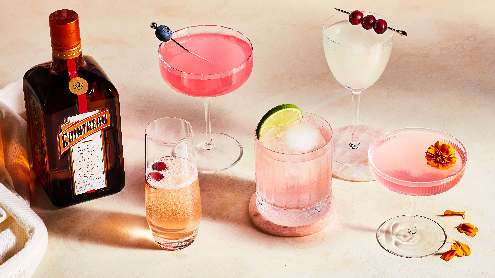

Cosmopolitan

If you're feeling cutesy and want a lighter tasting drink, a Cosmo is for you.
Ingredients
- 2 ounces vodka
- 1 ounce Cointreau
- 1 ounce cranberry juice
- 1 ounce fresh lime juice
- Ice
- Orange twist
Steps
- Place the vodka, Cointreau, cranberry juice, and lime juice in a cocktail shaker. Add ice and shake until well chilled.
- Strain into a chilled cocktail glass, traditionally a coupe or martini glass
- Garnish with an orange twist.
Home